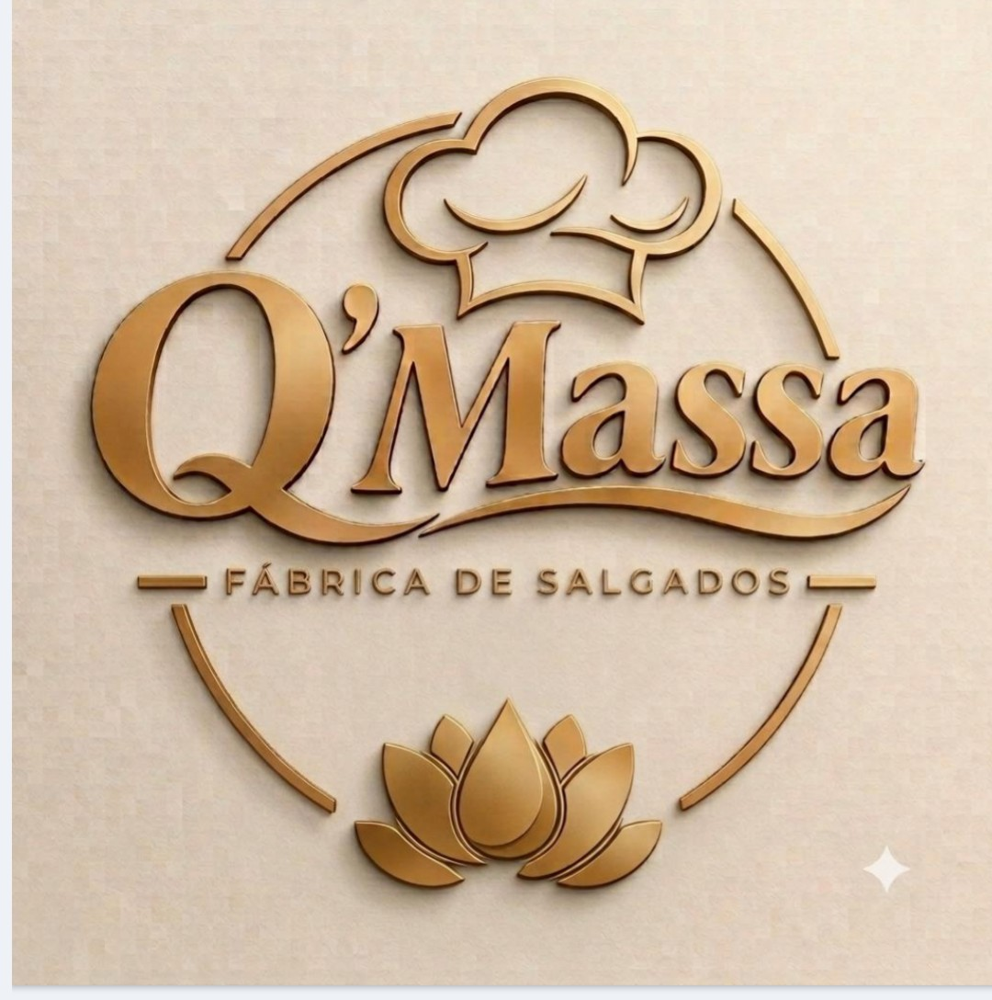

Coxinhas
Frango, frango com catupiry, carne e outros sabores sob consulta.
Coxinhas, quibes e bolinhos feitos com padrão artesanal em uma cozinha industrial. Para festas, buffets, eventos e revenda no Recife.

Deixa a parte mais difícil com a gente. Nós produzimos os salgados, você vende e fica com o lucro. Uma ótima forma de fazer uma renda extra com um produto que todo mundo gosta.
Quero ser revendedorTire suas dúvidas
Se você já tem um negócio e quer aumentar suas vendas, nosso produto vai alavancar e potencializar seus lucros!!! Entre em contato com nosso time de vendas!
Cozinha industrial com processos de limpeza e manipulação seguros.
Mesmo tamanho, mesmo recheio e mesmo sabor em todo pedido.
Capacidade de produção para revendedores e eventos de qualquer porte.
Receita artesanal com a eficiência de uma fábrica.
Conte o que você precisa e receba o orçamento pelo WhatsApp.
Solicitar orçamento